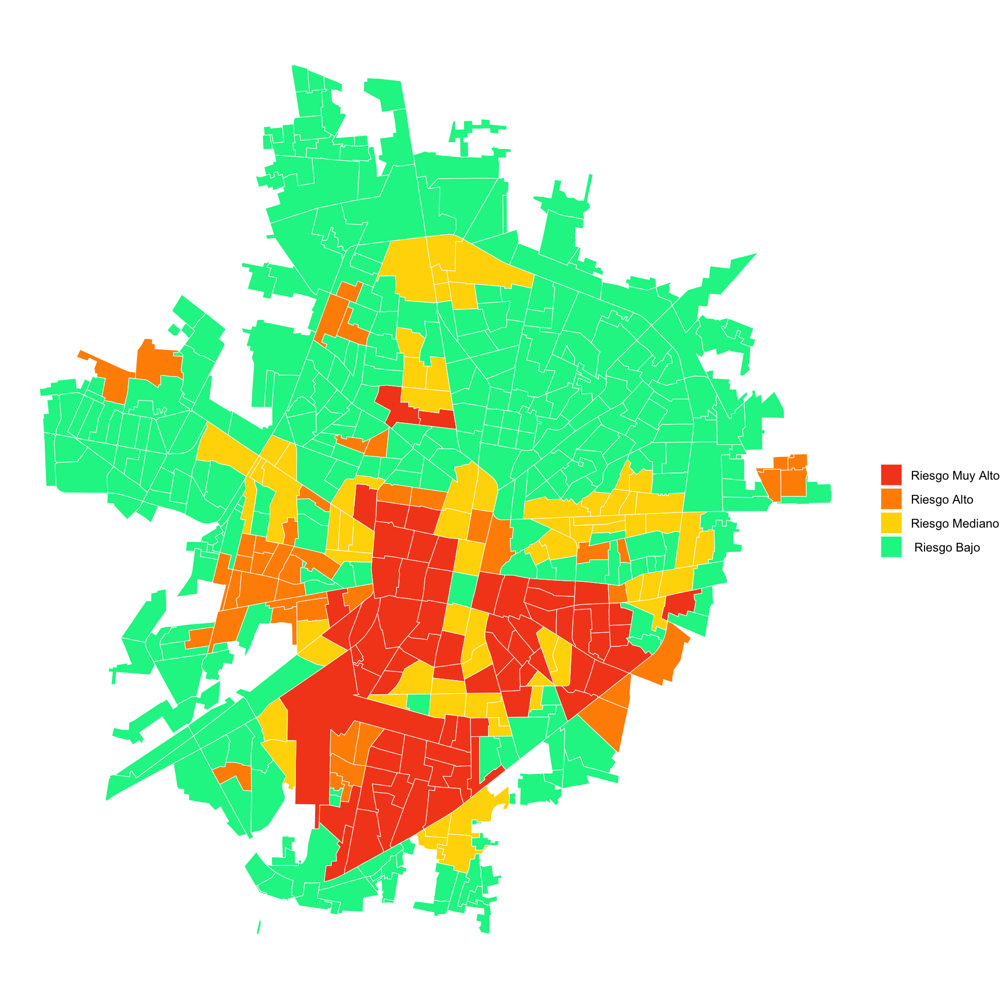

Escenarios Operativos para el abordaje de la prevención y control de Aedes aegypti y las arbovirosis humanas
en México
Dr. Felipe Dzul Manzanilla
Dr. Héctor Gómez-Dantés
2024-09-09
Directrices Regionales y Globales de los Escenarios Operativos
Desarrollo Conceptual del Modelo Estratégico de Focalización del Dengue en México
Concepto

Mapa de riesgo 
Definición de los Escenarios Operativos ó Epidemiológicos
Riesgo Muy Alto de Transmisión. Hotposts de casos + hotspots del vector.
Riesgo Alto de Transmisión. Hotspots de transmisión.
Riesgo Medio de Transmisión. Hotspots del vector.
Riesgo Bajo de Transmisión. Sin hotspots de transmisión o hotspots del vector.
1.Hotspots de la Transmisión Persistente de las Arbovirosis en Localidades Prioritarias
- Bajar las bases de datos del SINAVE.
- Geocodificar las bases.
- Bajar los shapefile del INEGI.
- Seleccionar la localidad de interes y extraer los AGEBs.
- Contar el número de casos por AGEB.
- Cálcular el Z-score de los casos.
- Generar la matriz de adjacencias.
- Cálcular el estadístico espacial local Getis&Ord \(\color{#2ECC40}G_{\color{#2ECC40}i}^{\color{#2ECC40}*}\).
- Realizar la la corrección de Bonferroni.
- Cálcular los hotspots.
- Visualizar los hotspots.
2. Hotspots de Abundancia Persistente del Vector en Localidades Prioritarias
Hotspots & Estadístico Espacial Local \(\color{#2ECC40}G_{\color{#2ECC40}i}^{\color{#2ECC40}*}\) (Hotspots)
\[\color{#2ECC40}G_{\color{#2ECC40}i}^{\color{#2ECC40}*} = \frac{\color{#FF4136}\sum_{\color{#FF4136}j \color{#FF4136}= \color{#FF4136}1}^\color{#FF4136}{n} \color{#FF4136}w_{\color{#FF4136}i\color{#FF4136}j}\color{#FF4136}x_{\color{#FF4136}j}} {\color{#0074D9}\sum_{\color{#0074D 9}j \color{#0074D9}= \color{#0074D9}1}^{\color{#0074D9}n} \color{#0074D9}x_{\color{#0074D9}j}}\]
donde:
\(\color{#FF4136}\sum_{\color{#FF4136}j \color{#FF4136}= \color{#FF4136}1}^\color{#FF4136}{n} \color{#FF4136}w_{\color{#FF4136}i\color{#FF4136}j}\color{#FF4136}x_{\color{#FF4136}j}\) el numerador, es la suma de los valores \(x_{i}\) de la unidad espacial de interes con sus vecinos \(x_{j}\) &
\(\frac{}{\color{#0074D9}\sum_{\color{#0074D9}j \color{#0074D9}= \color{#0074D9}1}^{\color{#0074D9}n} \color{#0074D9}x_{\color{#0074D9}j}}\) el denominador, es la suma de todos los valores \(x\) en toda la localidad de interes.
Hotspots son las áreas o las unidades espaciales con valores altos de \(\color{#2ECC40}G_{\color{#2ECC40}i}^{\color{#2ECC40}*}\) y homogéneos de la unidad espaciales de interes \(x_{ij}\). En otras palabras el estadístico espacial, identifica las unidades espaciales \(x_{ij}\) con valores altos comparados con el valor promedio de todas la unidades espaciales en la localidad de interes.
Avances de la Identificación de Escenarios Epidemiológicos
| Estados Trabajados |
|---|
| 01 Aguascalientes |
| 02 Baja California |
| 03 Baja California Sur |
| 04 Campeche |
| 05 Coahuila |
| 06 Colima |
| 07 Chiapas |
| 08 Chihuahua |
| 09 Ciudad de México |
| 10 Durango |
| 11 Guanajuato |
| 12 Guerrero |
| Estados Trabajados |
|---|
| 13 Hidalgo |
| 14 Jalisco |
| 15 Estado de México |
| 16 Michoacán |
| 17 Morelos |
| 18 Nayarit |
| 19 Nuevo León |
| 20 Oaxaca |
| 21 Puebla |
| 22 Queretaro |
| 23 Quintana Roo |
| 24 San Luis Potosí |
| Estados Trabajados |
|---|
| 25 Sinaloa |
| 26 Sonora |
| 27 Tabasco |
| 28 Tamaulipas |
| 29 Tlaxcala |
| 30 Veracruz |
| 31 Yucatán |
| 32 Zacatecas |
Desarrollo Conceptual del Modelo Estratégico de Focalización del Dengue en México
Dios Botic
email : felipe.dzul.m@gmail.com
celular : 9999580167
slide: link